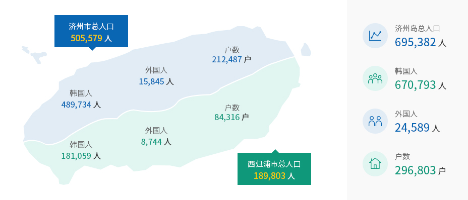

人口、经济增长率、产业结构
- Home
- 基础情况
- 行政及经济
- 人口、经济增长率、产业结构
人口
济州岛人口（截至2020年5月）



财政
- 财政 : 5.8229万亿韩元
- 财政自立度 : 32.9%
※ 资料来源及相关链接 : 济州特别自治道 (http://www.jeju.go.kr/jejuwnh/unesco/triple.htm)
产业
-
地区总产值
18.0227万亿韩元 -
人均GRDP
2852 万韩元 (全国平均为3365.7万韩元) -
经济增长率
4.9% -
外商直接投资 (FDI)
3 亿美元 -
旅游业毛收入
5.5718 万亿韩元 -
农业毛收入
1.6945 万亿韩元 -
柑橘
从事农户 3.0711 万户 年产量 63.1万吨 -
水产业 毛收入
年产量 18.7739 M/T 毛收入1.211万亿韩元 -
畜产业
从事农户 4918 户 存栏数量241.6万只
毛收入9925亿韩元 -
出口额
182 万美元 -
登记汽车数
59.6215 辆 (户均1.32辆) -
住宅普及率
107 % (266,425户)
※ 资料来源及相关链接 : 济州特别自治道 (http://www.jeju.go.kr/jejuwnh/unesco/triple.htm)
基础设施
-
济州国际机场
-
旅客吞吐量(2019) : 29,455,305人次
- 国内航线 : 27,555,827人次
- 国际航线 : 1,899,478人次
-
旅客吞吐量(2019) : 29,455,305人次
-
济州港/国际游轮码头
-
济州港/国际游轮码头(2019) : 1,345,802人次
- 国内航线 : 1,324,099人次
- 国际航线 : 21,703人次
-
济州港/国际游轮码头(2019) : 1,345,802人次
-
教育机构331所
- 大学校 4 (国立大学 1, 综合大学 1, 专科大学 2)
- 研究生院 2
- 国际学校 4
- 高中 30
- 初中 45
- 小学 113
- 幼儿园 123
- 分校 7
- 特殊学校 3
-
医疗设施 - 926家
- 综合医院 6
- 医院 8
- 疗养医院 9
- 诊所 439
- 牙科 216
- 韩医院 182
- 保健所 6
- 保健支所 11
- 保健诊疗所 47
- 健康生活支援中心 2
-
住宅普及率 - 105.2%
- 户数 24.0215户
- 住宅数 25.2644户
-
自然休养林 - 1处
- 西归浦治愈森林
-
自然公园 - 7处 361㎢
- 汉拿山国立公园
- 牛岛海洋道立公园
- 楸子海洋道立公园
- 西归浦海洋道立公园
- 马罗海洋道立公园
- 城山日出海洋道立公园
- 济州葛扎瓦道立公园
-
自然休养林 - 4处
- 济州节物自然休养林
- 西归浦自然休养林
- 桥来自然休养林
- 红岳自然休养林
-
旅游基础设施
- 高尔夫球场30家 33.6㎢
- 海水浴场11处
-
教育环境
- 国际学校4所, 在校生3900多名(2019)
- KIS Jeju
- NLCS Jeju
- BHA
- SJA JEJU
- 国际学校4所, 在校生3900多名(2019)